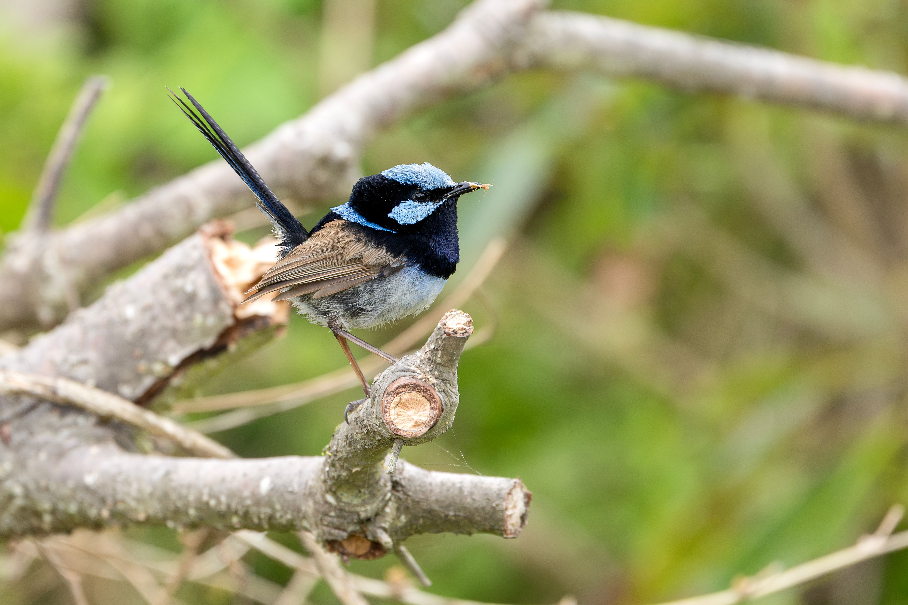

The Superb Fairywren is a tiny Australian songbird famous for the brilliant blue breeding plumage of the male. The male has a bright blue crown, ear coverts and throat, contrasted with a dark eye stripe and blue-black upperparts, while females and young birds are mostly brown. It lives in small social groups and spends much of its time hopping through dense vegetation and foraging close to the ground. Although it is small and delicate-looking, it is an active and highly social bird. It can be distinguished from other fairywrens by the male's particularly vivid blue breeding plumage and its preference for dense understorey in woodland, gardens and parks.